¿Te están mirando a vos?
O te están aplicando algo que funcionó con otra persona, en otro cuerpo y otro contexto.
“Que nadie llegue a los 76 años cargando el mismo dolor que le dejó, a los 20, un entrenador con técnica pero sin criterio.” Tu cuerpo es tuyo. No necesitás ser entrenador para cuidarlo con criterio.
Una convicción nacida de una historia real y más de dos décadas observando cómo una mala decisión de entrenamiento puede acompañar a una persona durante años.
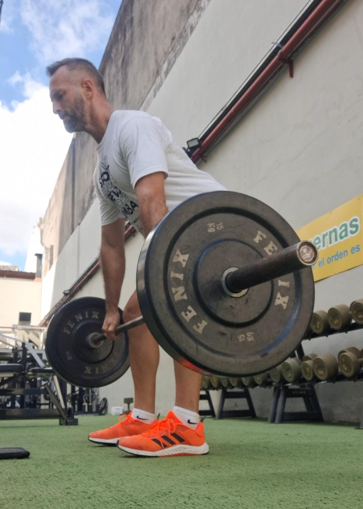
Entrenamiento para personas +40 que quieren entrenar sin romperse.
Podés ejecutar perfecto un ejercicio y aun así estar haciendo algo que no tiene sentido para tu cuerpo, tu edad, tu historia o tu momento.
La pregunta no es solamente “¿está bien hecho?”. También es “¿esto tiene sentido para mí?”.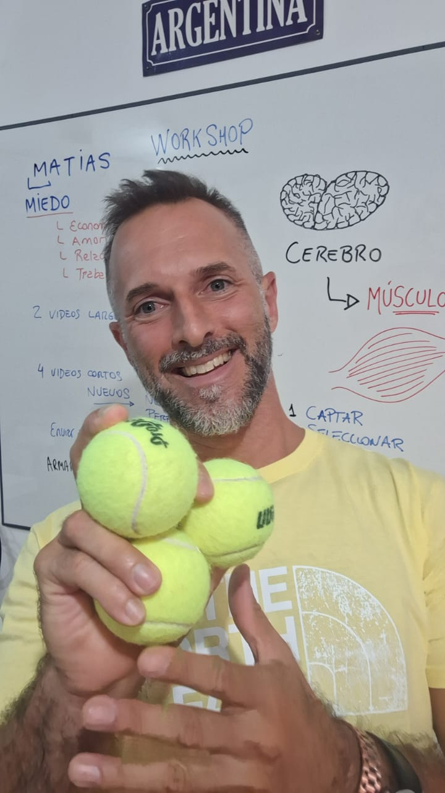
POR QUÉEl padre de Alejandro cargó durante décadas un dolor lumbar que empezó con una mala carga de gimnasio cuando tenía 20 años. De ahí nace una convicción: el cuerpo de una persona no puede tratarse como una fórmula.
No se trata de desconfiar de todo. Se trata de aprender a pedir criterio, hacer preguntas y entender que el entrenamiento tiene que adaptarse a quien tenés adelante.
O te están aplicando algo que funcionó con otra persona, en otro cuerpo y otro contexto.
No necesitás ser entrenador. Pero sí podés entender qué busca tu plan y qué señales escuchar.
El objetivo no es rendir solamente dentro del gimnasio, sino tener un cuerpo que te acompañe afuera.
“¿El que me entrena me mira a mí, o me aplica una fórmula?”
No necesitás entender un sistema antes de empezar. Elegí la situación que más se parece a la tuya y mirá qué podemos hacer juntos.
Quiero moverme mejor, ganar fuerza y sentirme acompañado sin depender de un horario fijo ni de una rutina genérica.
Quiero mejorar mi forma de trabajar, ordenar mis clases y construir una propuesta profesional que se diferencie.
Quiero que el gimnasio funcione mejor, dependa menos de apagar incendios y pueda sostener lo que construye.
La forma de trabajo busca que la decisión aparezca después de conocer a la persona. Sin horarios rígidos para entrenar, con recursos para entender lo que hacés y acompañamiento real cuando aparece una duda.
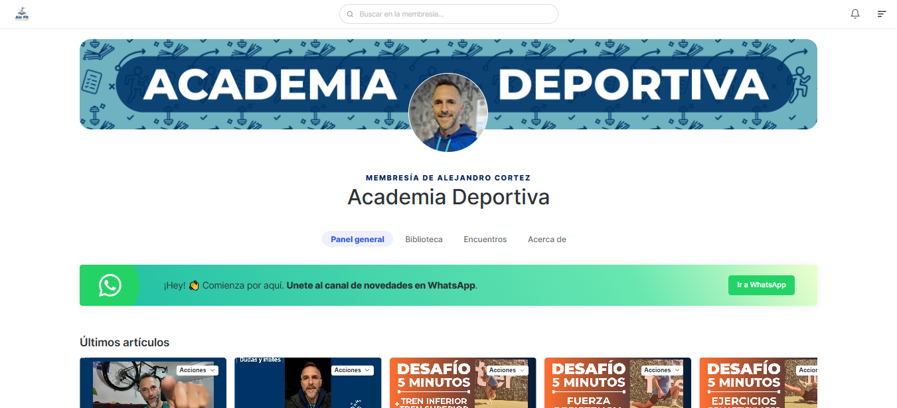
Videos, e-books, PDFs y encuentros grupales de Dudas y Mates para entender qué hacés, por qué lo hacés y cómo cuidar tu proceso.
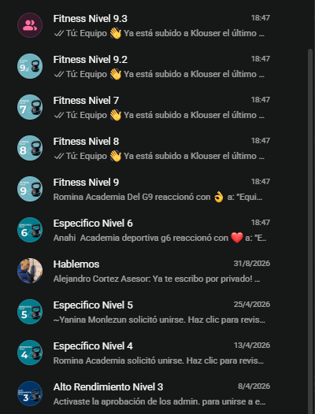
Antes de indicarte qué hacer, buscamos conocerte y ubicar tu nivel PODIO. El entrenamiento empieza desde tu realidad, no desde una fórmula.
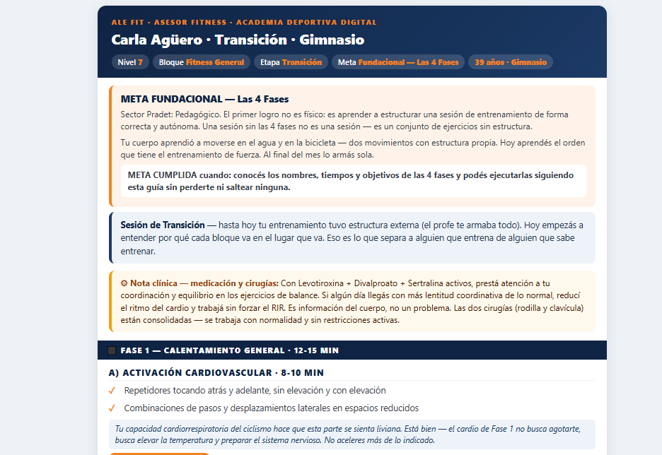
Las sesiones son 100% asincrónicas. Si hoy no pudiste, no perdiste una clase: tu entrenamiento sigue esperándote para cuando puedas hacerlo.
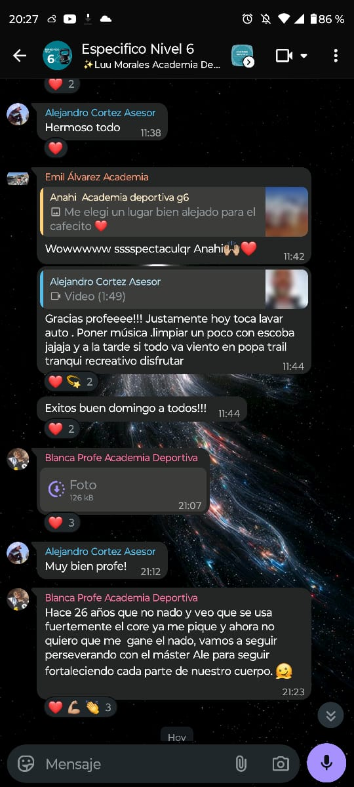
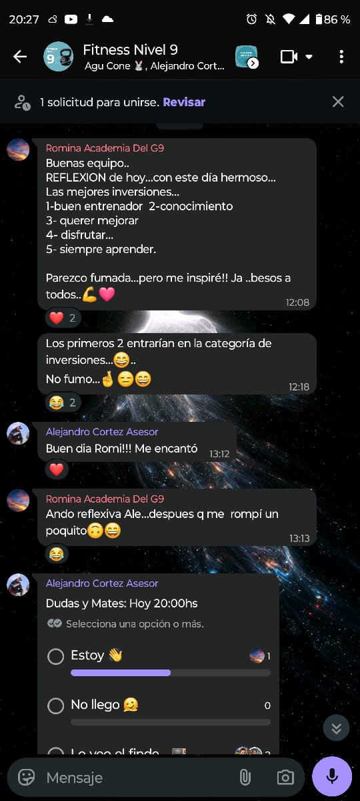
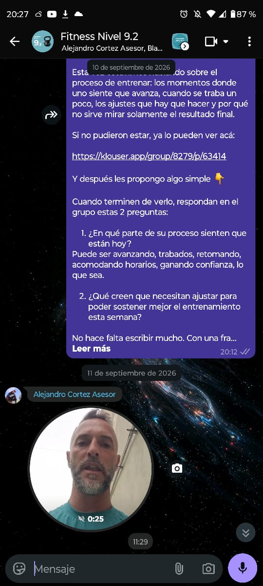
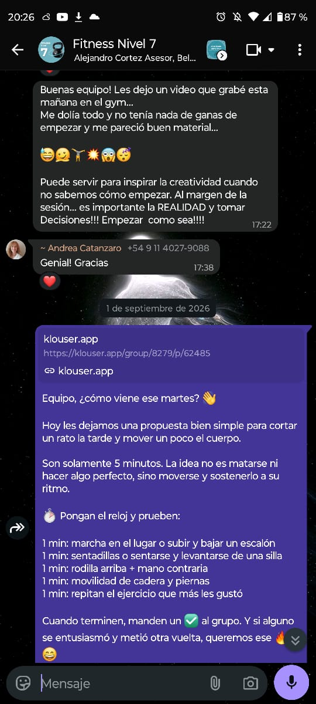
Mandás videos y recibís correcciones técnicas, ajustes de carga y respuestas según cómo responde tu cuerpo. No entrenás a ciegas.
LA IDEA No entrás a una biblioteca para consumir más contenido. Entrás a un proceso donde la información, la práctica y el acompañamiento tienen que ayudarte a tomar mejores decisiones con tu cuerpo.
Ver cómo se vive como alumno →Los primeros días no deberían sentirse como “mirá todo lo que hay”. Deberían darte una señal concreta de que esto está pensado para vos.
Primero te conocemos. Después entrenás. Y a partir de lo que pasa, ajustamos.
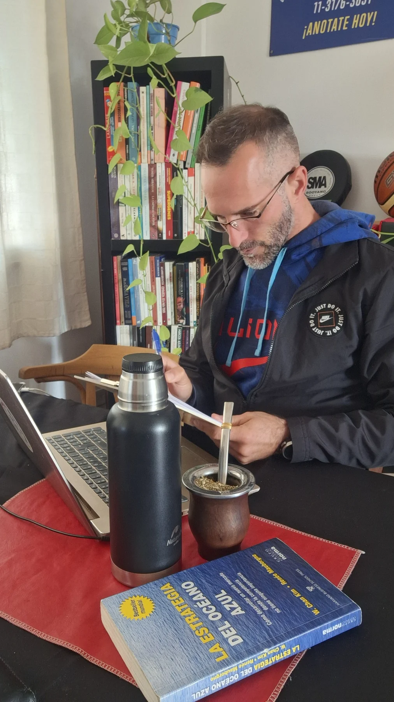
Se trata de empezar a comprobar que hay criterio, seguimiento y decisiones que nacen de tu propia realidad.
Entrevista, objetivos, antecedentes, molestias, tiempos y contexto. Antes de indicarte algo, necesitamos entender dónde estás.
Tu evaluación y tu nivel PODIO ayudan a ordenar desde dónde empezar y qué tiene sentido trabajar primero.
La sesión responde a tu momento actual. No buscamos que hagas más: buscamos que lo que hagas tenga sentido.
Tu ejecución, tus sensaciones y tus respuestas sirven para corregir técnica, ajustar cargas y seguir construyendo.
Queremos que empieces a comprobarlo con evidencia propia.
Un detalle técnico que cambia lo que ves o sentís al moverte.
Una carga, una progresión o una decisión que responde a cómo venís entrenando.
Empezás a entender por qué hacés algo y qué señales mirar en tu cuerpo.
No hay un horario que se te escapó. Tu sesión sigue ahí. Entrenás cuando podés, sin convertir una semana complicada en otra razón para abandonar.
WhatsApp para el seguimiento del entrenamiento y encuentros de Dudas y Mates para preguntar, aprender y compartir con otros sin romper la lógica asincrónica.
NO ENSEÑO RUTINAS.
ENSEÑO A PENSAR EL ENTRENAMIENTO COMO UN SISTEMA.
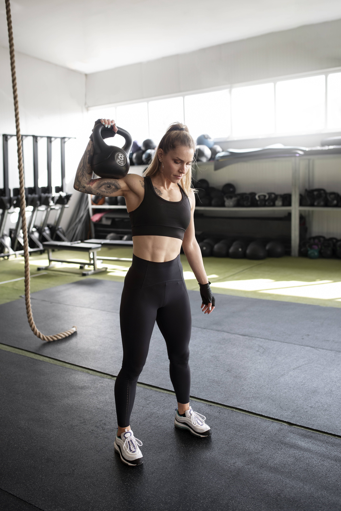
01Entrenar no debería sentirse como apostar a ver si esta vez no te lesionás. La propuesta es que puedas elegir lo que más necesitás hoy: acompañamiento, corrección, libertad de horarios o una sesión realmente pensada para vos.
Por eso el acompañamiento se adapta a tu momento. Estas son algunas de las cosas que más suelen valorar quienes entrenan conmigo.
Primero entendemos tus objetivos, antecedentes, molestias y tiempos reales. Después decidimos cómo empezar.
No se trata de compararte con nadie. Se trata de conocer tu punto de partida para avanzar con seguridad.
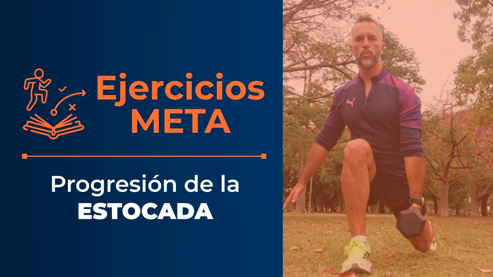
03Casa o gimnasio, más o menos tiempo, más o menos experiencia: la sesión tiene que adaptarse a vos.
Mandás tus videos, recibís devoluciones y no te quedás solo cuando aparece una duda.
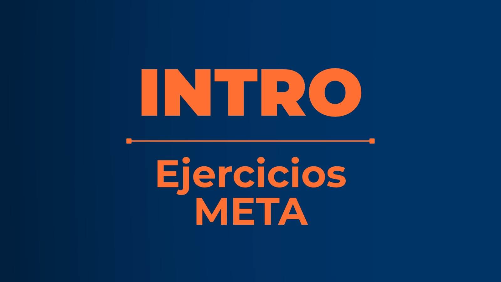
05La Academia te ayuda a entrenar con criterio: menos copiar ejercicios, más entender tu cuerpo y tu proceso.
¿No sabés cuál de estas necesidades es la tuya? Contame tu situación y lo vemos juntos.
Comunicate conmigo ↗Entrenador y formador con más de dos décadas de experiencia. Su recorrido combina entrenamiento en parques de Buenos Aires, trabajo con empresas como Google, formación de profesionales y dirección de proyectos.
La Academia nace de una idea simple: reemplazar la improvisación por un sistema que permita entender el cuerpo, tomar mejores decisiones y construir resultados que puedan sostenerse.
años pensando
el movimiento
Primero el por qué. Después el criterio. Recién ahora aparecen las propuestas concretas.
Elegí la que corresponda a tu situación: entrenar, formarte como profesional o ordenar un gimnasio.
Técnica, progresiones y herramientas para entender cómo ejecutar mejor cada movimiento.
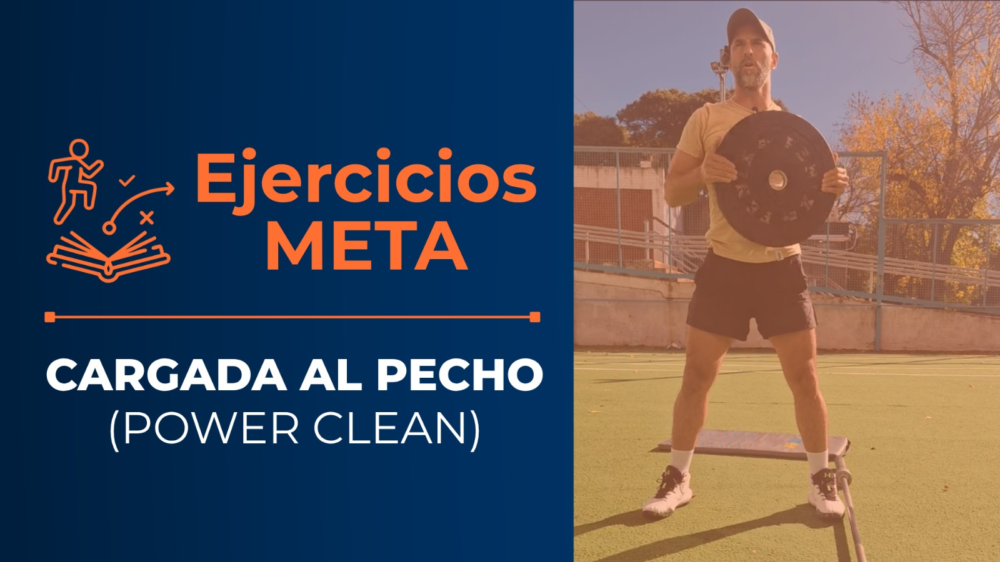
▶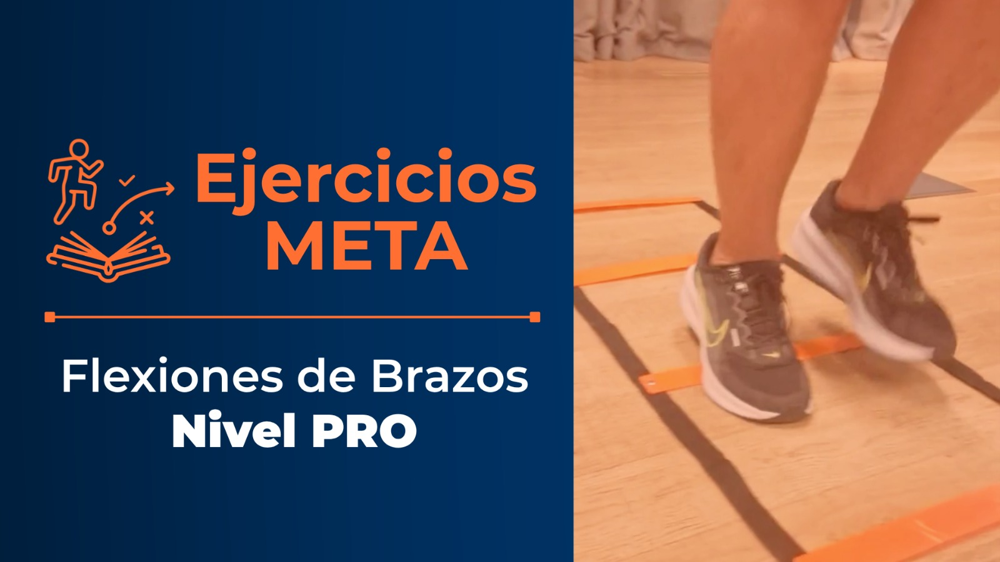
▶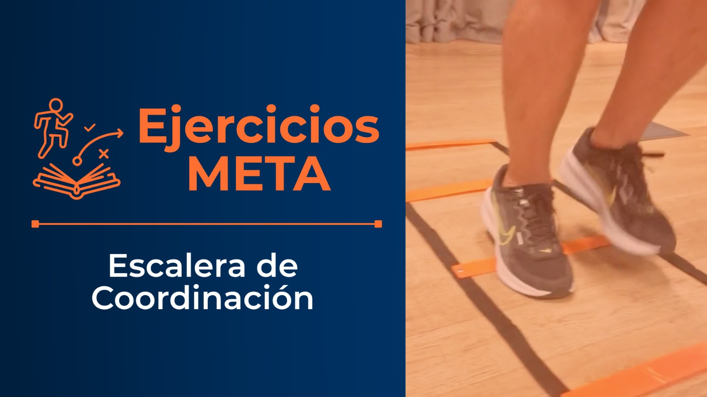
▶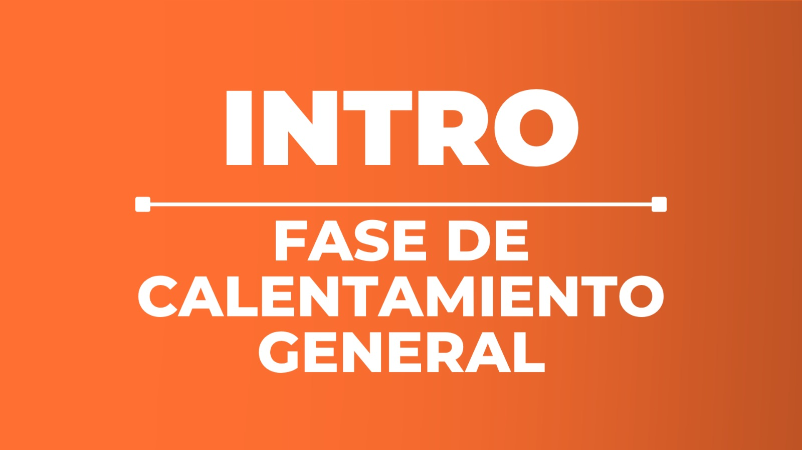
▶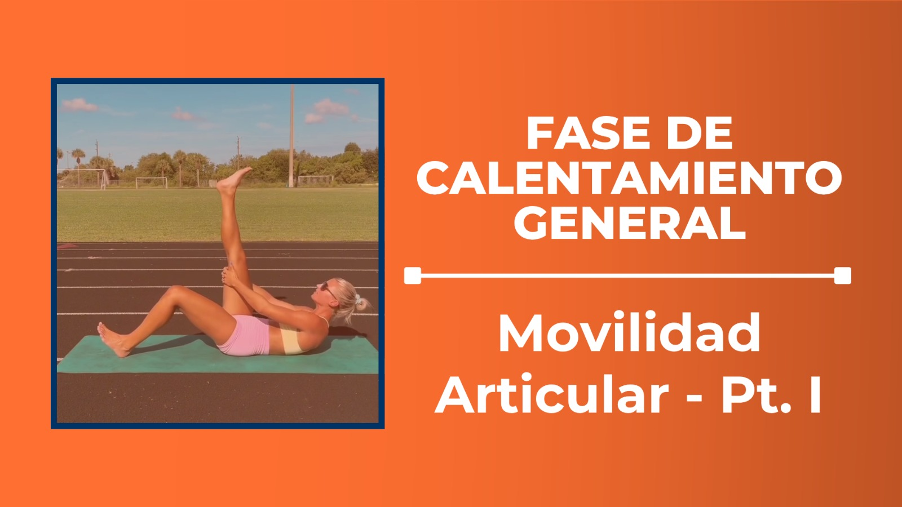
▶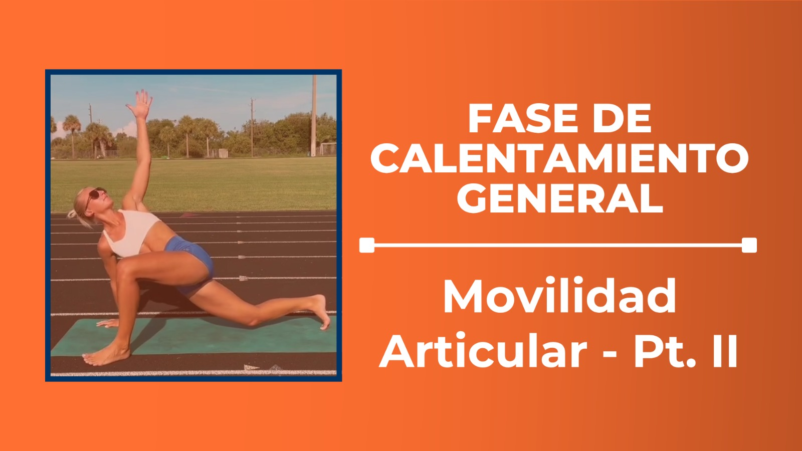
▶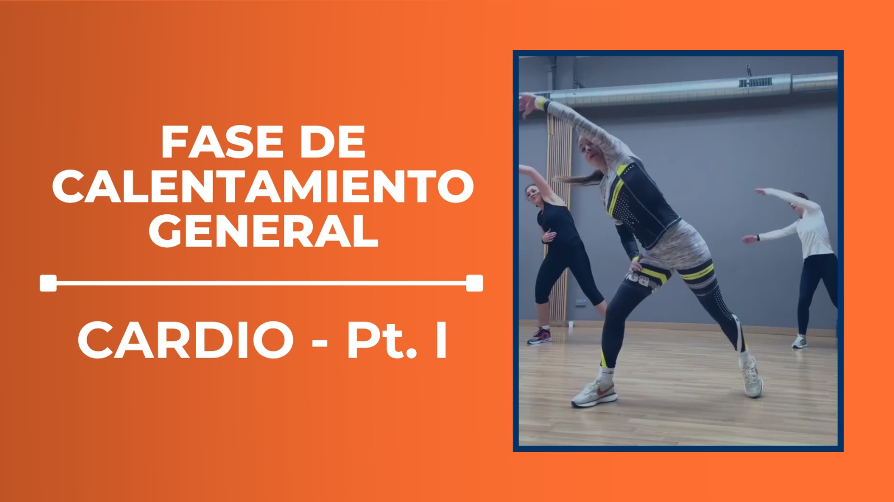
▶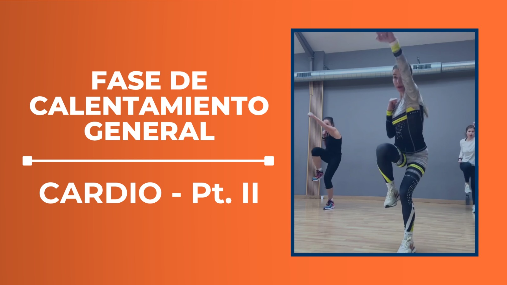
▶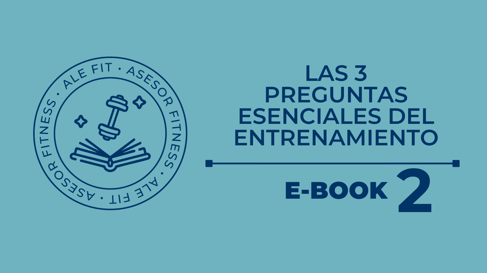
E-BOOKIncluye una introducción en video antes del material.
Ver intro + e-book en Klouser ↗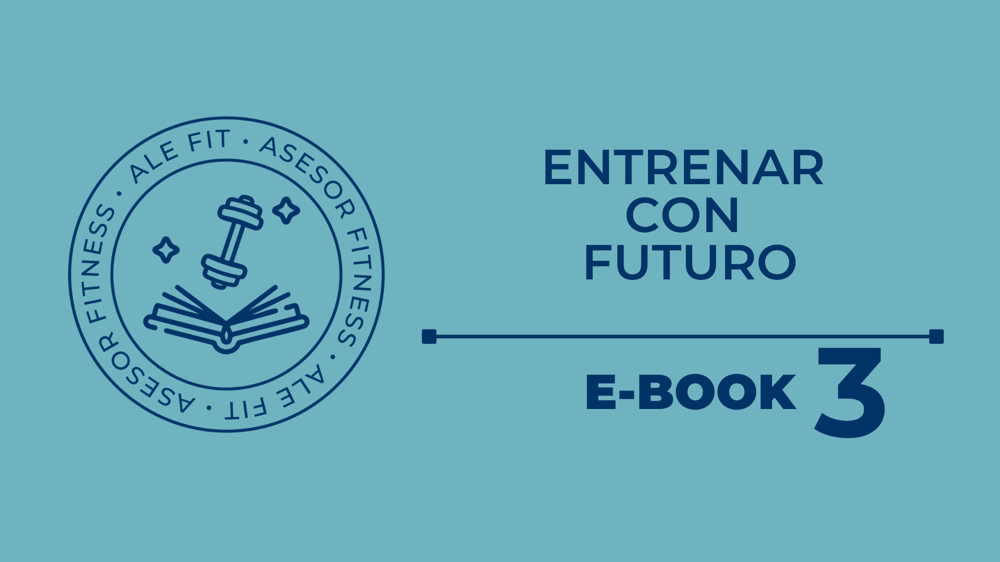
E-BOOKIncluye una introducción en video antes del material.
Ver intro + e-book en Klouser ↗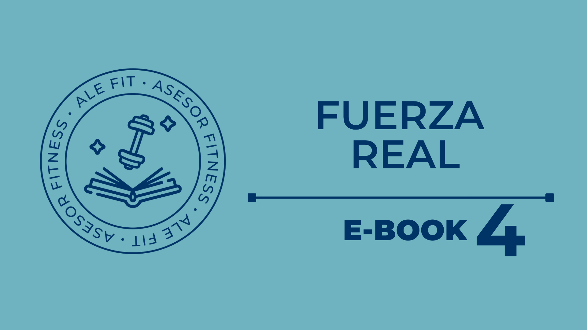
E-BOOKIncluye una introducción en video antes del material.
Ver intro + e-book en Klouser ↗Un espacio de entrenamiento +40 con grupos reducidos de solo 6 personas, donde entrenás en tus tiempos, podés enviar tus videos para recibir correcciones y aprendés a tomar decisiones con más criterio, propósito y planificación.
A diferencia de los planes masivos, acá hay análisis técnico, seguimiento y una persona real mirando cómo entrenás. La idea no es solamente decirte qué ejercicio hacer: es enseñarte por qué lo hacés.
Tenés ejercicios, progresiones, videos, e-books y recursos para entrenar a tu ritmo. Los encuentros de Dudas y Mates son una capa aparte para preguntar y compartir: no reemplazan ni condicionan tus sesiones asincrónicas.
Ejercicios, progresiones, calentamientos y contenidos teóricos y prácticos.
Enviás tus videos y trabajamos directamente sobre tu técnica y ejecución.
Encuentros periódicos para resolver preguntas, ordenar conceptos y seguir aprendiendo.
Correcciones, análisis de casos reales y aprendizaje compartido entre alumnos y entrenadores.
Vas a empezar a entender tu cuerpo, tus objetivos y tus límites. Te voy guiando desde la fase de calentamiento, pasando por fuerza y flexibilidad, hasta el estiramiento final. No solamente qué hacer, sino por qué hacerlo.
Entrar a la Academia ↗Podés empezar con autonomía, sumar guía y correcciones, o trabajar de manera totalmente personalizada.
18 años capacitando entrenadores a través de cursos, workshops y talleres. No se trata solo de técnica: se trata de crear tu método, planificar mejores clases y construir un sistema de trabajo sostenible dentro del deporte.
Formatos cortos y prácticos, pensados para aplicar herramientas desde la primera clase y no quedarse únicamente en la teoría.
Cómo observar mejor al alumno, planificar con criterio y estructurar clases que tengan una intención clara.
Pasar de dar clases a construir una propuesta profesional con estructura, identidad y un modelo de trabajo económicamente sostenible.
La experiencia asesorando centros de entrenamiento permite trabajar también sobre lo que un gimnasio necesita de sus profesionales y de sus equipos.
01 Entrenadores que quieren dejar de improvisar sesiones.
02 Profes que buscan un método claro que marque una diferencia.
03 Quienes quieren armar su propio proyecto o emprendimiento.
04 Profes que ya trabajan en gimnasios y quieren seguir creciendo.
Ayudo a gimnasios a consolidar su estructura para organizarse, crecer y, sobre todo, sostenerse en el tiempo. No es una consultoría genérica: hay entrevista, diagnóstico y un plan construido a partir de la situación real del negocio.
Qué funciona, qué depende solamente del dueño y qué está frenando el crecimiento.
Definir roles, responsabilidades y procedimientos para que el gimnasio funcione con más claridad.
Foco en lo que la estructura realmente puede sostener, no en crecer rápido para caer seis meses después.
El objetivo no es crecer por un momento: es construir un gimnasio que siga funcionando y evolucionando dentro de cinco años.
Tu gimnasio creció sin una estructura que acompañara ese crecimiento.
El negocio depende demasiado de vos para funcionar.
Querés ordenar antes de seguir escalando.
El equipo necesita procesos definidos y sistematizados.
Un gimnasio que creció en un año sin marketing pago. La estructura, sin embargo, no había crecido al mismo ritmo.
Sin periodización: todos los alumnos recibían el mismo estímulo, sin una progresión definida.
Grupo de competencia sin macrociclo a cinco meses del evento.
Temporada baja sin una estrategia clara para aprovechar el margen disponible.
Diagnóstico inicial: entrevista + análisis FODA.
Plan de acción a tres años: macrociclos y nuevas líneas de ingreso.
Acompañamiento mensual: videollamadas, seguimiento semanal y contacto directo.
“Crecer así, sin accidente, significa que hay algo que ya funciona. El problema es que lo que los trajo hasta acá ya no alcanza para lo que viene.”
Tu cuerpo es tuyo. Podemos empezar por entender dónde estás y qué necesitás. Después vemos qué propuesta tiene sentido para vos.